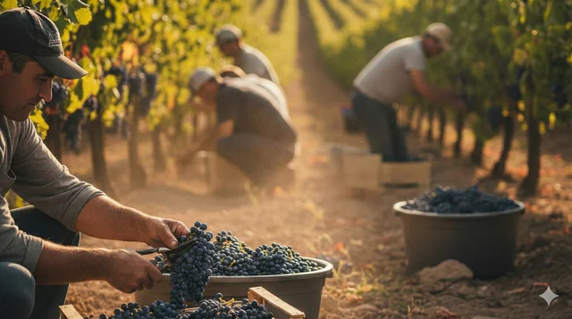

Vendimia (cosecha)
La vendimia es la cosecha de las uvas en su punto óptimo de maduración. Puede ser manual o mecánica, y el momento elegido influye en la acidez, el dulzor y el estilo del vino.
La vendimia es mucho más que la cosecha: es una serie de pasos que transforman la uva en vino. A continuación, un recorrido simple por las principales etapas del proceso.
La vendimia es la cosecha de las uvas en su punto óptimo de maduración. Puede ser manual o mecánica, y el momento elegido influye en la acidez, el dulzor y el estilo del vino.
El despalillado separa los granos del raspón. El estrujado rompe suavemente las pieles para liberar el jugo, evitando triturar las semillas para que no aporten sabores amargos.
El mosto se macera con pieles y semillas para extraer color, aromas y taninos. Al mismo tiempo ocurre la fermentación alcohólica, donde las levaduras transforman el azúcar en alcohol.
Se prensa el mosto para separar el jugo de los sólidos (hollejos y semillas). A partir de aquí, el vino continúa su transformación hacia un perfil más definido.
Es un proceso opcional donde el ácido málico se transforma en ácido láctico. Suaviza la acidez y aporta una textura más redonda, especialmente en vinos tintos.
Se eliminan sedimentos y partículas mediante clarificación y filtrado. El trasiego pasa el vino de un recipiente a otro para separarlo de las lías y lograr mayor limpidez.
La crianza en barrica o en botella permite que el vino desarrolle nuevos aromas y se afine. Finalmente se embotella y puede seguir evolucionando hasta el momento de consumo.